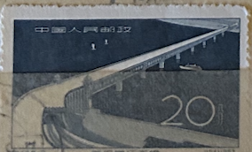
| SOURCE | TITLE| IMAGE MATCH | click to source page |
| www.ebay.com | China (PRC) 1957 #319-20 Completion of Yangtze River Bridge ... | 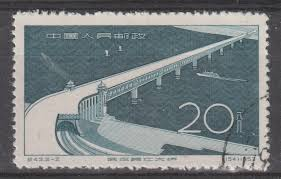 |
| www.ebay.com | PRC. 320. C43-2. 20f. Great Changjiang River Bridge at ... | 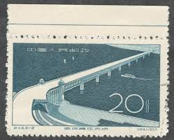 |
| www.hipstamp.com | China Stamp-1957-Sc#319-20 Yangze River Bridge-: CTO Nh ... | 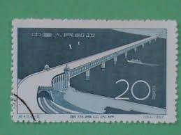 |
| www.xabusiness.com | C43 Scott 319-320 Great Yangtze River Bridge at Wuhan ... | 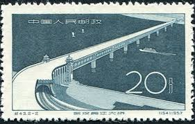 |
| es.wallapop.com | Sellos China Puente Río Yangtze Wuhan 1957 de segunda mano ... | 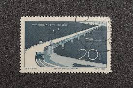 |
| www.ebay.com | CHINA PRC 1957 C43 YANGTZE RIVER BRIDGE (Scott 319-320) VF ... | 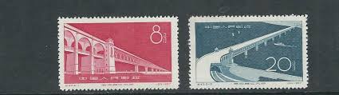 |
| www.linns.com | A tour of the bridges on Chinese stamps | 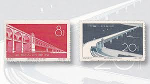 |
| www.nakanihon.co.jp | BPA192 | 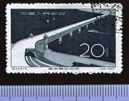 |
| commons.wikimedia.org | File:Ji43, Wuhan Yangtze River Bridge, 1957.jpg - Wikimedia ... | 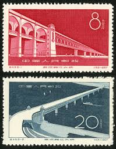 |
| www.arpinphilately.com | Buy China #1916-8 - Gezhou Dam, Yangtze river (1984) | Arpin ... | 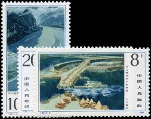 |
| mt.sohu.com | 邮票上的建筑——有故事的佼佼者-搜狐 | 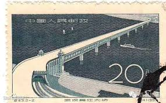 |
| cornerblockstamps.ca | Stamps - Corner Block Stamps | 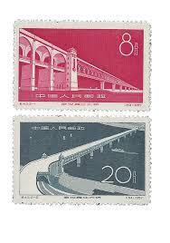 |
| findyourstampsvalue.com | Gezhou Dam, Yangtze River - 长江葛洲坝水利枢纽工程：长江 ... | 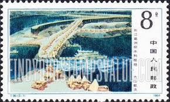 |
| www.pinterest.com | Bridge over the Yangtze River in Wuhan 20 (1957) - China ... | 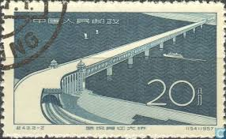 |
| www.ebay.com | PRC. 320. C43-2. 20f. Great Changjiang River Bridge at ... | 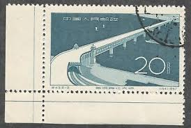 |
| www.instagram.com | China holds the global record with the Danyang–Kunshan Grand ... | 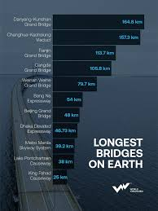 |
| link.springer.com | Using Foreign Experience for Reference and Laying a ... | 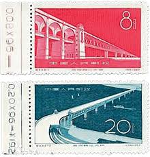 |
| findyourstampsvalue.com | Yellow River Dams: Qingtong Gorge - 黄河水利水电工程: 青铜峡 ... | 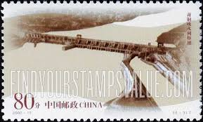 |
| japancrafts21.com | Sudden Shower over Shin-Ohashi bridge and Atake (Woodblock ... | 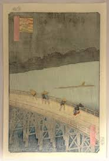 |
| allnationsstampandcoin.com | P.R. China #1452 VFNH 1978 $2 Bridge Souvenir Sheet | All ... | 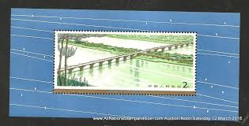 |
| chineseposters.net | The Yangzi River Bridge in Nanjing | Chinese Posters ... | 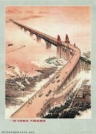 |
| www.carousell.sg | China Stamps C43 MNH NGAI, Hobbies & Toys, Memorabilia ... | 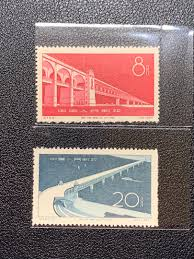 |
| www.shutterstock.com | China Prc 1957 October 1 8 Stock-foto 2196537197 | Shutterstock | 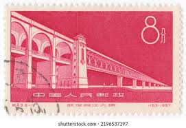 |
| www.tautochanh.com | Tem Đồ cổ Đồ cổ Tem bưu chính Tem Cộng hòa Trung Quốc Tem ... | 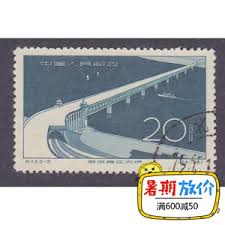 |
| www.cnn.com | The bridge that changed China forever | CNN | 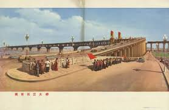 |
| www.postbeeld.com | Stamp 1984, China People's Republic Gezhou dam 3v, 1984 ... | 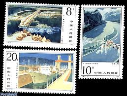 |
| www.tandfonline.com | A TUNNEL WITH NO CARS | 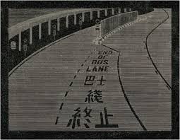 |
| www.xabusiness.com | T95 Scott 1916-18 Gezhouba WaterControl Projects on Yangtze ... | 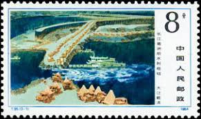 |
| tw.bid.yahoo.com | 嚴選紀43長江大橋蓋銷全品特惠郵票新中國珍藏版無損郵封輝煌郵集 ... | 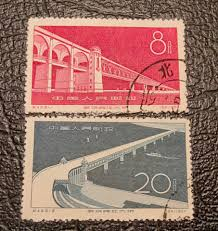 |
| www.auctionsappraisers.com | Lot - ASIAN: Two woodblock prints, figures in rain, the ... | 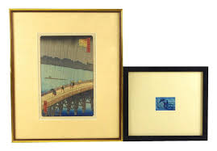 |
| esam.ir | تمبر باطله کلاسیک خارجی کد 2161 | 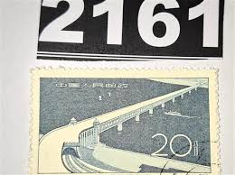 |
| artondemand.famsf.org | Evening Rain at Atake on the Great Bridge, 1857 by Utagawa ... | 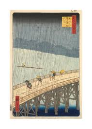 |
| www.facebook.com | This project makes me cry. The 1-km-long art museum rises ... | 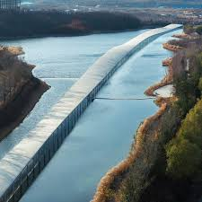 |
| www.mxiqi.com | 1984年T95《长江葛洲坝水利枢纽》 - 爱陶轩- 爱陶轩- 麦稀奇 | 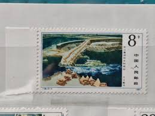 |
| brstamp.com | J8 胜利完成第四个五年计划– 左氏珍藏 | 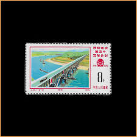 |
| www.art.com | Sudden Shower over Shin-Ohashi Bridge at Atake, from 'One ... | 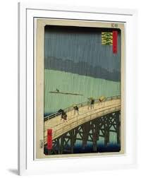 |
| www.nytimes.com | 10-Minute Challenge: Hiroshige's 'Sudden Rain' - The New ... | 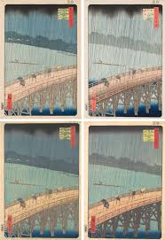 |
| www.mercadolibre.com.ar | Sello - China - Apertura Del Puente Sobre El Rio Yang Se ... | 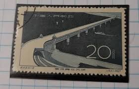 |
| www.architecturalrecord.com | Junya Ishigami's Zaishui Art Museum Nimbly Extends Across ... | 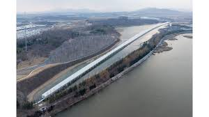 |
| www3.nhk.or.jp | Braving the Rain and the Currents - Ukiyoe EDO-LIFE | NHK ... | 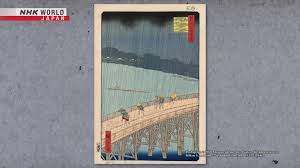 |
| www.teamwakon.com | Utagawa Hiroshige - No.059 Ryōgoku Bridge and the Great ... | 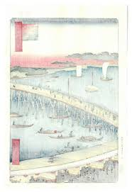 |
| www.tiktok.com | Discover the World's Highest Bridge at Huajiang Canyon | TikTok | 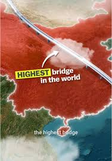 |
| www.floridamemory.com | Florida Memory • Seven Mile Bridge - The Longest span of the ... | 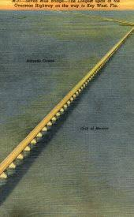 |
| shopee.co.id | Jual prangko china lama 20 tahun 1957 kondisi sesuai gambar ... | 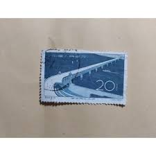 |
| www.facebook.com | L0438 ： Grading TP 纪43 武汉长江大桥95分上美品Rm65 | 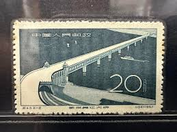 |
| www.bjzxcp.com | 2001-16 引大入秦工程（T）单套_1992年-2001年_编年邮票_邮票 ... | 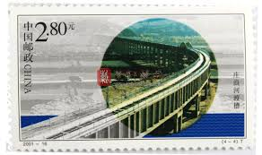 |
| www.alamy.com | Sudden Shower over Shin-Ōhashi bridge and Atake 1857 Utagawa ... | 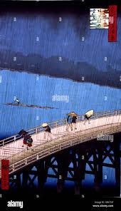 |
| bungu.store | Ukiyo-e Design Self-Adhesive Photo Album / Nakabayashi – bungu | 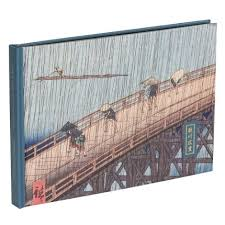 |
| chineseposters.net | The Yangzi River Bridge in Wuhan | Chinese Posters ... | 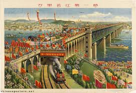 |
| nipponprints.com | Sudden Shower over Shin-Ohashi bridge and Atake (reprint ... | |
| www.tradera.com | China | Mi 1266 | Postfr.. | Köp från StarAndStampStore på ... | |
| collections.discovernewfields.org | Evening Shower on the Great Bridge and Atake | |
| tw.bid.yahoo.com | 紀43武漢長江大橋（2全）1957年全新全品保真錢幣紀念幣硬幣二手 ... | |
| news.cgtn.com | Xizang in five colors: Where nature meets culture - CGTN | |
| www.sothebys.com | Utagawa Hiroshige (1797-1858) | Sudden Shower over Shin ... | |
| www.youtube.com | CAM Look | No. 52, Ohashi Great Bridge, Sudden Shower at ... | |
| onlinelibrary.wiley.com | Early concrete bridges in China as (dissonant) modern ... | |
| m.news.cctv.com | 大型文献专题片《我们走在大路上》| 第四集：起宏图 | |
| thespaces.com | Junya Ishigami's Zaishui Art Museum glides across the ... | |
| wilcom.com | Elevating Designs with Curved Fills and Color Blends in ... |
{kind=link}